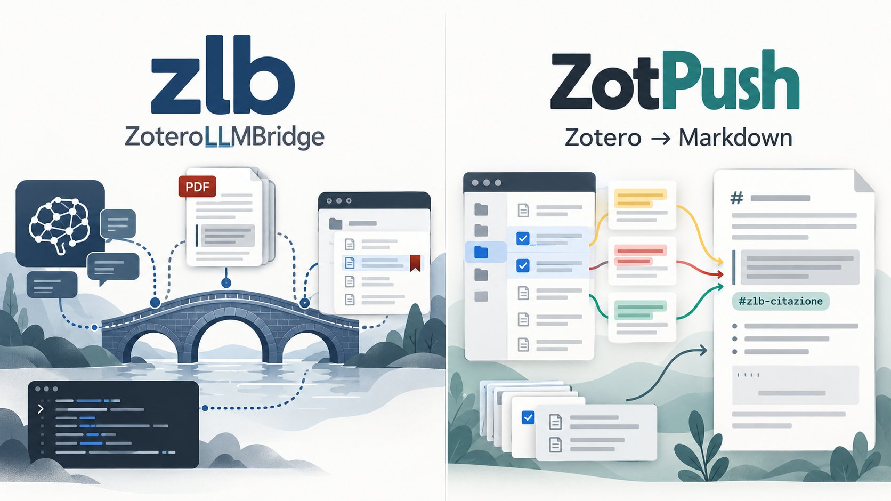

zlb e ZotPush: la ricerca dentro e fuori da Zotero
Due strumenti open source: uno porta i documenti nella libreria con l’aiuto di un LLM, l’altro ne porta fuori le evidenze in Markdown
Paolo Volterra ![]()
Zotero, LLM, Markdown, bibliografia, open source

Zotero è un programma gratuito e open source per raccogliere, organizzare, annotare e citare le fonti di una ricerca, disponibile per Windows, macOS, Linux, iOS e Android [1]. È sviluppato da un’organizzazione senza scopo di lucro, Digital Scholar, e da una comunità internazionale.
I pregi che contano di più per chi studia:
- Raccolta con un clic. Mentre si naviga, Zotero riconosce articoli, libri, preprint e pagine web e ne salva i dati bibliografici, spesso con il PDF.
- Organizzazione libera. Raccolte, tag e ricerche salvate che si aggiornano da sole.
- Lettura e annotazione. I PDF si leggono ed evidenziano dentro Zotero; le annotazioni restano legate alla fonte.
- Citazioni pronte. Riferimenti e bibliografie in qualsiasi editor e direttamente in Word, LibreOffice e Google Docs, con oltre 9.000 stili di citazione.
- I dati restano propri. La libreria sta sul computer dell’utente; la sincronizzazione fra dispositivi è facoltativa, e le librerie di gruppo si condividono senza costi.
Per zlb e ZotPush conta soprattutto l’ultimo punto: entrambi lavorano sulla libreria locale, senza passare da servizi esterni.
1 Il problema
Una ricerca bibliografica fatta con un LLM produce di solito un elenco di titoli e di link. Il lavoro vero comincia dopo: trovare i PDF, metterli nella libreria, leggerli, segnare i passi che servono e riportarli nel testo che si sta scrivendo. Sono passaggi manuali, ripetitivi, e soggetti a un errore preciso: la citazione che non si trova più nel documento da cui si pensava di averla presa.
zlb e ZotPush coprono le due metà di questo giro. zlb lavora verso Zotero: importa, organizza, evidenzia. ZotPush lavora da Zotero: esporta in Markdown ciò che è stato letto e segnato. In mezzo resta chi legge.
2 zlb: un ponte fra un LLM e la libreria
zlb (ZoteroLLMBridge) è un comando da terminale per Zotero 10, utilizzabile anche da script e da agenti LLM su Linux, macOS e Windows [2]. Parla con Zotero attraverso l’API locale che il programma espone sul computer quando è aperto [3]: nessun account, nessun servizio esterno.
Il caso d’uso tipico è questo. Si chiede a un LLM di consigliare paper su un tema e di cercarne i PDF. L’LLM prepara un piccolo file JSON (il manifest) con titoli, DOI, chiavi Zotero o URL dei PDF. zlb esegue la parte locale:
- cerca ogni riferimento nell’intera libreria e collega alla raccolta le schede già presenti;
- importa i PDF nuovi tramite l’API locale, senza duplicare quelli che esistono già;
- scrive il file BibTeX, mettendo in testa i riferimenti che non è riuscito a reperire, senza chiavi o percorsi inventati.
Il secondo uso è la verifica delle citazioni. Il comando highlight riceve le frasi esatte che un testo cita, le cerca nel PDF e le evidenzia in Zotero, in grigio e con il tag zlb-citazione. Prima mostra un’anteprima: se una frase non si trova, o compare più di una volta, non scrive nulla.
Le regole sono strette. zlb non cancella schede, raccolte o allegati: non ha un comando per farlo e rifiuta le richieste di cancellazione. Non scrive nel database di Zotero, passa sempre dall’API. Alla prima scrittura Zotero chiede all’utente di autorizzarla.
2.1 Le novità della 0.3.0
- Citation key = chiave del PDF. Quando importa un PDF sotto una scheda, zlb imposta la citation key della scheda alla chiave di otto caratteri del PDF in Zotero. La stessa fonte ha così la stessa chiave BibTeX in ogni progetto. I comandi
citekeyecitekey-allfanno lo stesso sulle schede già presenti. - Tag automatici, su richiesta. Per ogni nuovo PDF un modello locale può scegliere fino a N tag già presenti nella libreria: non può inventarne di nuovi.
2.2 Perché i tag automatici sono spenti per default
I tag automatici richiedono un LLM in esecuzione sul computer (Ollama) e un modello scaricato: zlb accetta solo un Ollama locale, così il testo dei PDF non lascia la macchina. Chi non ha questa configurazione non deve trovarsi con un’importazione che fallisce. Per questo nella 0.3.0 sono spenti, e si accendono in tre modi: con l’opzione --tag-count N sul singolo comando, con la variabile ZLB_TAG_COUNT, oppure una volta per tutte con un file config.json accanto alla cache delle autorizzazioni:
{"tag_count": 10}Il numero è un massimo, non un obiettivo: se i tag pertinenti sono meno, ne vengono applicati meno. La scelta resta quella di un modello linguistico, e va controllata come tale.
3 ZotPush: dalla libreria al Markdown
ZotPush MD è un plugin di Zotero [4]. Seleziono una o più fonti, scelgo Push selezione in Markdown… dal menu Strumenti o dal clic destro, e ottengo file Markdown con metadati in YAML, abstract, note, evidenze e immagini delle annotazioni. I file funzionano in Obsidian o in qualsiasi editor.
Il comando Push evidenze filtrate in Markdown… fa una cosa più mirata: raccoglie da tutte le fonti selezionate solo le annotazioni di un certo colore o con un certo tag, in un unico dossier. Ogni evidenza porta con sé testo, pagina, commento, tag e un link che riapre il PDF esattamente su quell’annotazione.
La garanzia di ZotPush è opposta a quella di zlb: non scrive mai nella libreria. Non modifica schede, note, tag o raccolte; l’unica scrittura avviene nella cartella scelta dall’utente, e un file con lo stesso nome non creato dal plugin non viene sovrascritto. Ogni npm test lancia un controllo automatico del codice che cerca chiamate capaci di modificare Zotero. Se si riesporta lo stesso dossier, le note personali scritte sotto il blocco generato restano dove sono.
4 Come si incastrano
Il punto di contatto è un tag. zlb highlight segna i passi con zlb-citazione, e tag:zlb-citazione è il filtro che ZotPush propone per default. Il giro completo diventa: un LLM propone le fonti, zlb le porta in Zotero e segna i passi che il testo usa, chi scrive legge e controlla, ZotPush riporta le evidenze in un file Markdown con il link a ogni pagina.
Un esempio eseguito davvero, dalla bibliografia di un mio paper al dossier finale, con tutti gli intoppi incontrati per strada, è nel post Dalla bibliografia di un paper a un dossier di citazioni.
5 Dove trovarli
| Strumento | Versione | Licenza | Codice | Archivio |
|---|---|---|---|---|
| zlb | 0.3.0 (19/11/2026) | 0BSD | GitHub | 10.5281/zenodo.22900666 |
| ZotPush MD | 0.5.2 (2/11/2026) | MIT | GitHub | 10.5281/zenodo.22901555 |
In parole semplici: entrambi gli strumenti sono gratuiti, con il codice pubblico e una copia archiviata con DOI; i DOI in tabella portano sempre all’ultima versione.
Entrambi sono stati provati dal vivo con Zotero 10 su Linux. Su macOS e Windows l’installazione di zlb è documentata ma non ancora provata dal vivo; ZotPush dichiara compatibilità anche con Zotero 9, non provata per la versione corrente.
Nota metodologica
Questo documento nasce dall’interazione di tre componenti. L’autore definisce le domande, esercita il giudizio critico e assume la responsabilità scientifica ed editoriale del risultato. Strumenti di intelligenza artificiale generativa sono impiegati a supporto della ricerca bibliografica, della lettura, della sintesi, della riorganizzazione argomentativa e della revisione del testo. Un’infrastruttura open source sviluppata dall’autore automatizza il reperimento, l’armonizzazione e il controllo dei dati dalle fonti statistiche ufficiali, e mantiene l’elaborazione documentata e riproducibile.
Le fonti sono pubblicamente accessibili e citate con la loro denominazione ufficiale; l’analisi è pertanto integralmente auditabile e replicabile da terzi a partire da esse. Le tabelle e i grafici sono elaborazioni dell’autore: calcoli, aggregazioni, trasformazioni e scelte di rappresentazione sono attribuibili all’autore e non agli enti produttori dei dati.
La responsabilità per le fonti utilizzate, le analisi condotte, le elaborazioni effettuate, le interpretazioni proposte e le conclusioni formulate resta interamente in capo all’autore. L’intelligenza artificiale è stata impiegata come ambiente di supporto cognitivo ed editoriale, non come fonte primaria, autore autonomo o sostituto del giudizio critico.
Riferimenti
Vedi anche
- Agents.md aiuto oppure ostacolo?La ricerca analizza l’efficacia dei file di contesto come AGENTS.md, strumenti teoricamente progettati per guidare gli agenti di programmazione AI all’interno dei repository software.
- Dalla bibliografia di un paper a un dossier di citazioniIl giro completo, eseguito davvero: dalla bibliografia di un paper a una raccolta Zotero con BibTeX, ai passi della fonte evidenziati, a un dossier Markdown con il link a ogni pagina. Con i quattro intoppi incontrati per
- ChatGPT & Reverse EngineeringRicavare i valori di un grafico da un’immagine con un LLM: come far lavorare in gruppo modello, OCR e Python.